Bayonet-Lock Quick-Change CTO Coconut-Shell Carbon Block Filter Cartridge
- Format
- Bayonet-lock connection
- Filter media
- Carbon block (CTO)
OEM Bayonet-Lock quick-change water filter cartridges in PP, UDF, CTO, RO and T33 stages for commercial RO water dispensers and matching quick-change filter heads. Connection geometry, dimensions and the matching head must be confirmed for each project.
Compare the listed models and open a detail page. Model records are counted separately from configurable dimensions; suitability must be confirmed for your project.

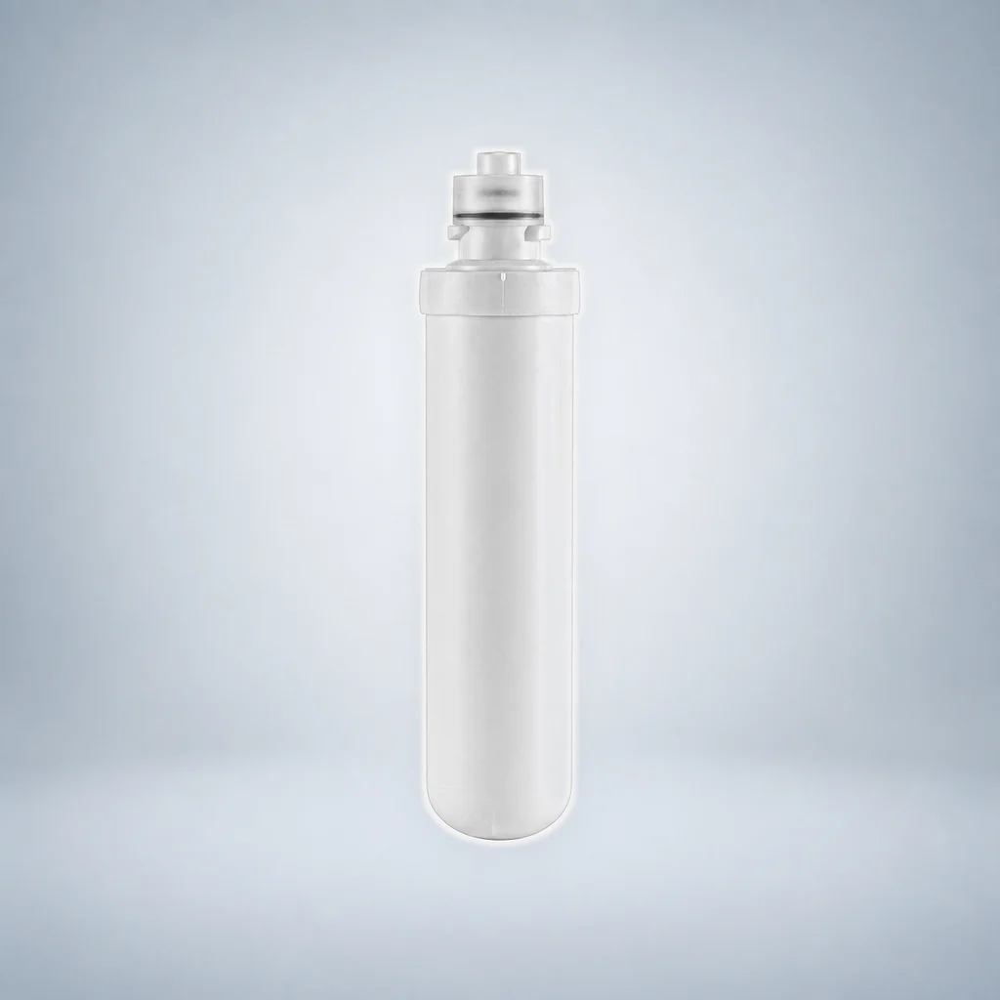


The photographs show installed cartridges, the Bayonet-Lock head and interface, and individual filtration stages. They do not claim compatibility with an unverified brand or model.

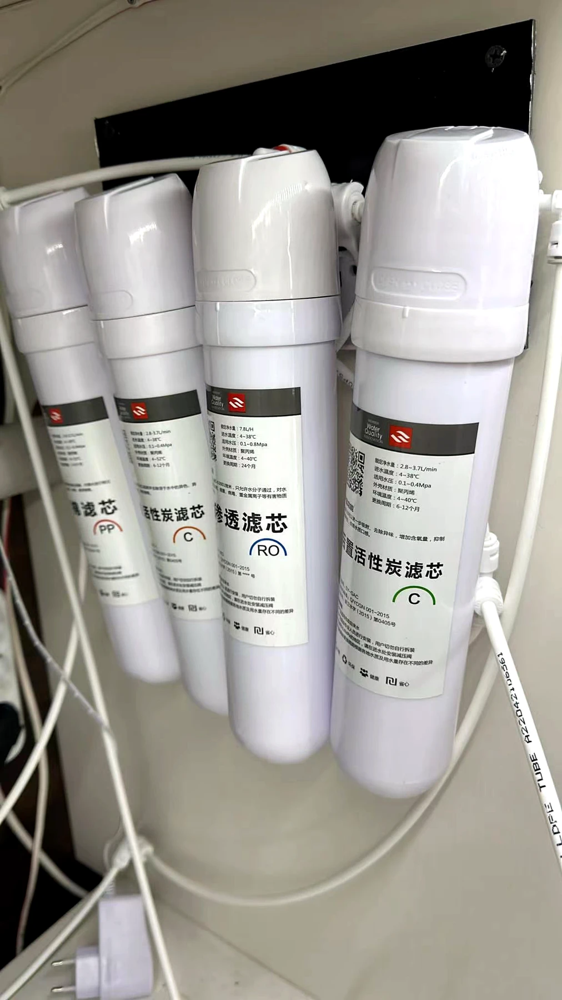
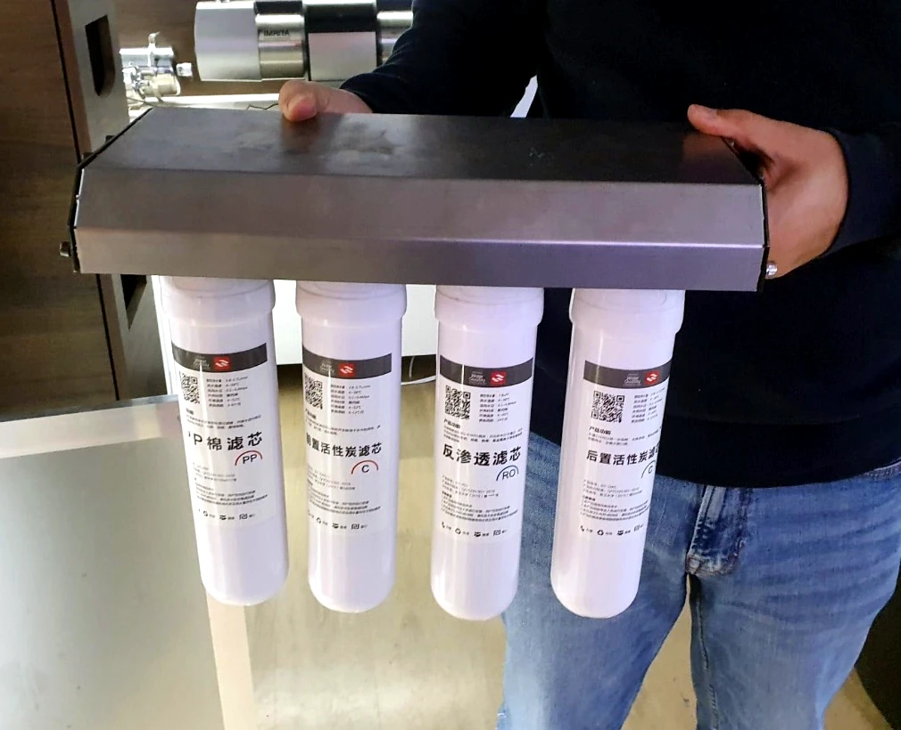
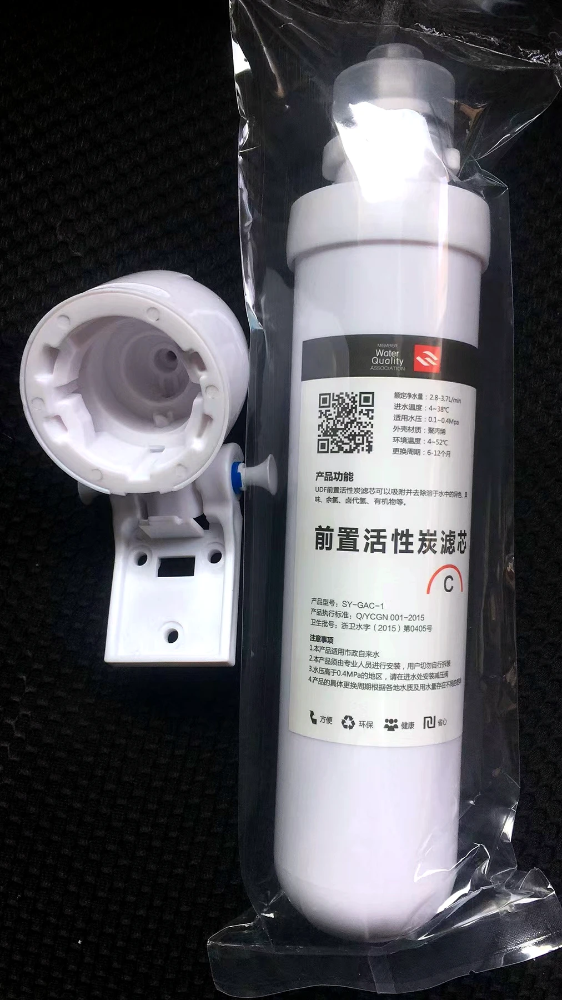
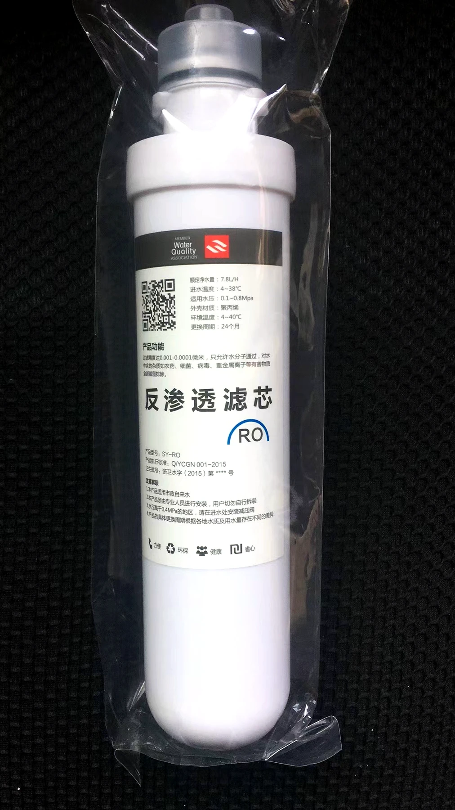
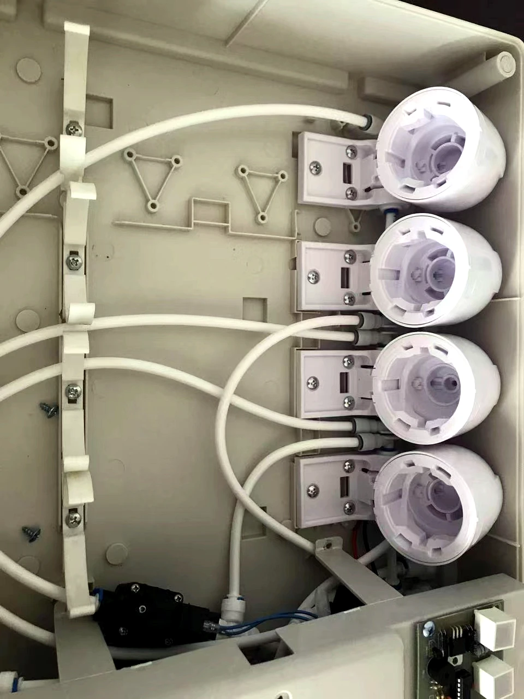
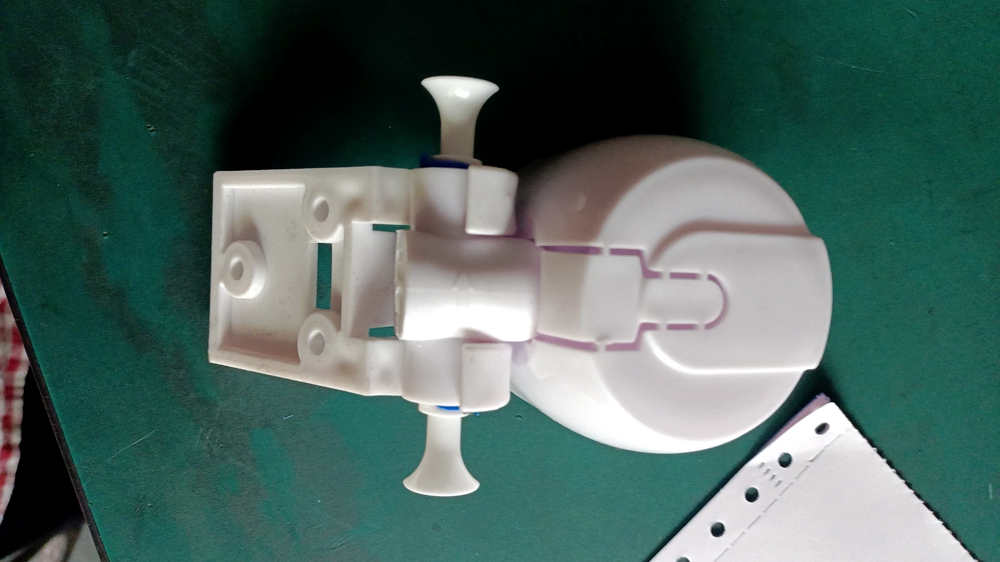
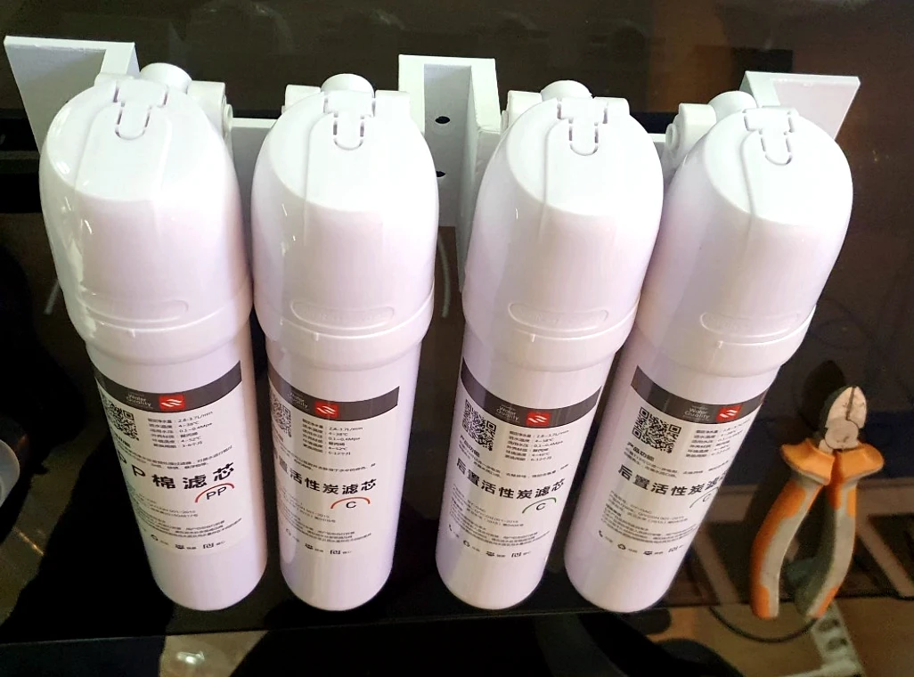
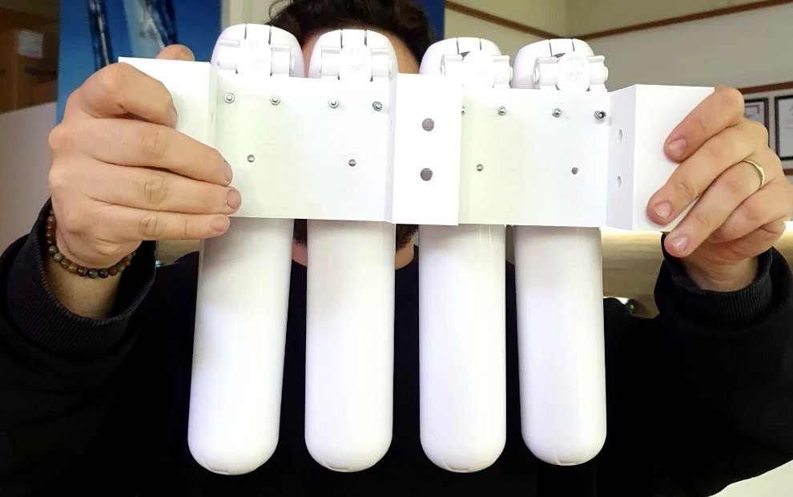
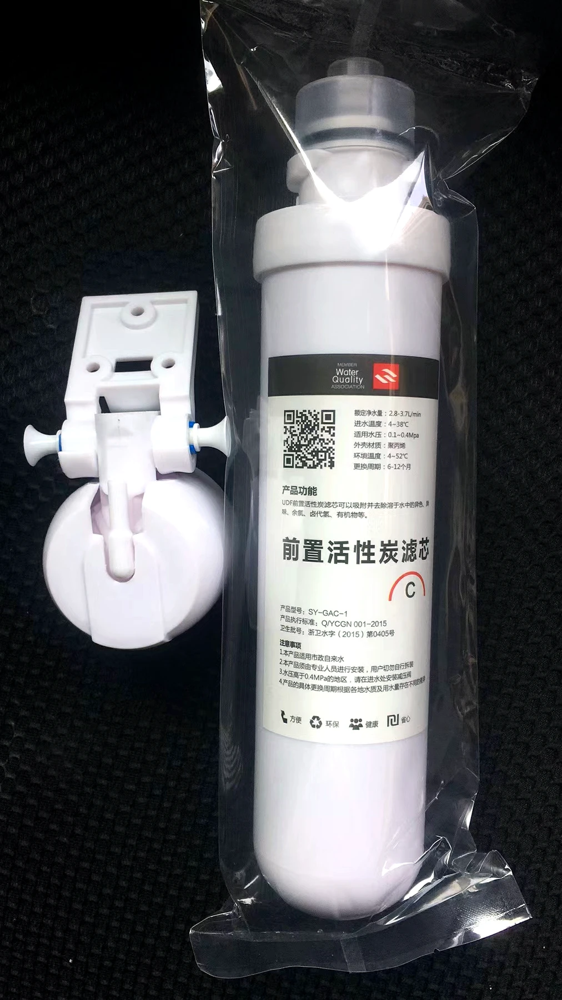
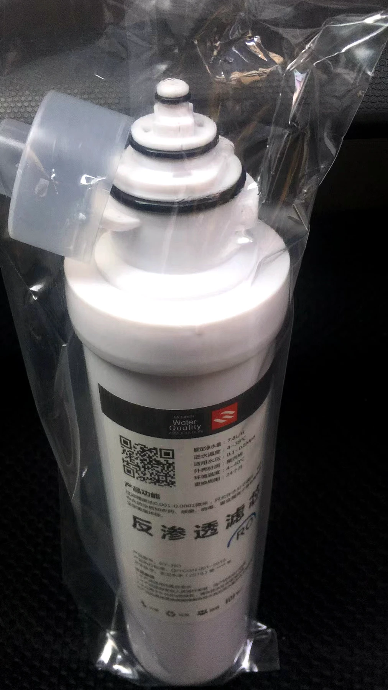
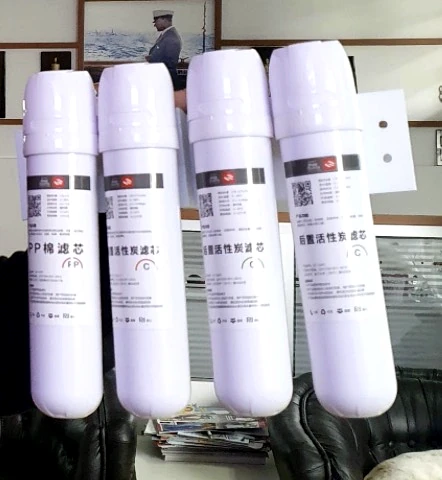
The Bayonet-Lock PP Sediment Filter Cartridge uses a bayonet-lock connection. It uses Polypropylene (PP) sediment media.
View productThe Bayonet-Lock UDF Coconut-Shell Granular Activated Carbon Filter Cartridge uses a bayonet-lock connection. It uses Coconut-shell granular activated carbon (GAC/UDF).
View productThe Bayonet-Lock CTO Coconut-Shell Carbon Block Filter Cartridge uses a bayonet-lock connection. It uses Carbon block (CTO). It is intended for a carbon-block adsorption stage in water purifier and replacement-filter programs.
View productThe Bayonet-Lock RO Membrane Filter Cartridge uses a bayonet-lock connection. It uses Reverse osmosis (RO) membrane. It provides a membrane-stage configuration;
View productThe Bayonet-Lock T33 Coconut-Shell Activated Carbon Filter Cartridge uses a bayonet-lock connection. It uses Coconut-shell activated carbon. It is intended for a post-carbon stage in water purifier and replacement-filter programs.
View product